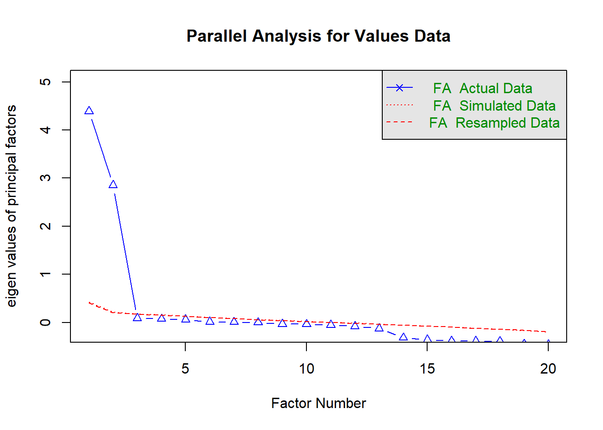
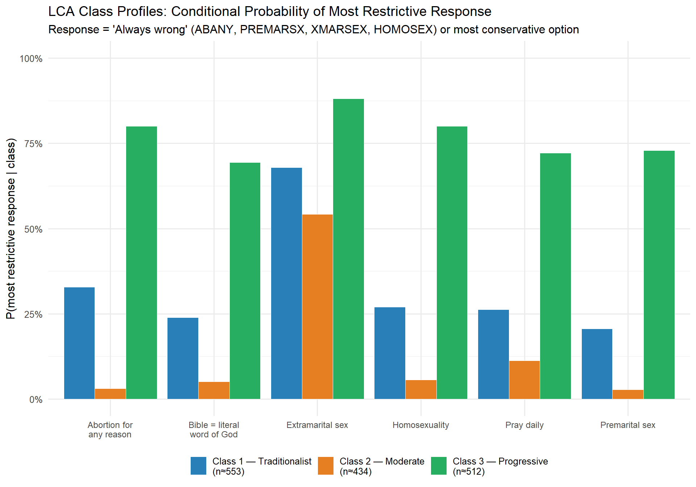

Week 1 Latent Variable Methods I: LCA and Factor Analysis
Weeks 7–8 | Methods Lab 4: LCA + EFA/CFA
1.1 4.1 Why Latent Variable Models?
Cultural constructs — schemas, moral orientations, cultural capital, logics — are latent: they are inferred from patterns in observable indicators, not measured directly. Latent variable models are therefore the appropriate quantitative paradigm for cultural sociology.
Two foundational approaches:
| Method | Manifest indicators | Latent variable | Best for |
|---|---|---|---|
| Factor Analysis (EFA/CFA) | Continuous (or treated as) | Continuous dimensions | Values scales, attitude dimensions |
| Latent Class Analysis (LCA) | Categorical | Categorical types | Moral typologies, ideological clusters |
1.2 4.2 Exploratory Factor Analysis
EFA decomposes a correlation matrix into a smaller number of latent factors. The model: each observed variable is a linear combination of common factors plus a unique factor.
\[X_i = \lambda_{i1}F_1 + \lambda_{i2}F_2 + \cdots + \lambda_{ik}F_k + \epsilon_i\]
where \(\lambda_{ij}\) are factor loadings (the correlation between variable \(i\) and factor \(j\)), \(F_j\) are common factors, and \(\epsilon_i\) is unique variance.
Key decisions in EFA:
- Factor extraction method: maximum likelihood (ML) preferred for hypothesis testing; principal axis factoring (PAF) when normality is in doubt.
- Number of factors: parallel analysis (most defensible) > scree plot > Kaiser criterion (eigenvalue > 1, widely criticized as overextracting).
- Rotation: orthogonal (Varimax — factors are uncorrelated) vs. oblique (Oblimin, Promax — factors may correlate). In cultural sociology, oblique is usually theoretically appropriate because attitudes and values are correlated.
- Loading cutoff: |λ| > .40 is conventional; |λ| > .30 in small samples. Items with cross-loadings (loading >.30 on two factors) are ambiguous.
1.3 Lab 4a: EFA on Values Data (WVS Structure)
We use the Schwartz Basic Human Values framework (10 value types, measured by 21 items in WVS) as the EFA target. The Schwartz model predicts a two-dimensional circular structure (openness to change vs. conservation; self-enhancement vs. self-transcendence). We test whether the factor structure supports this prediction.
We begin by loading libraries and constructing a simulated dataset that mirrors the structure of WVS values items. Simulating data here lets us know the true factor structure in advance, which is useful for learning to evaluate whether the EFA recovers it correctly.
library(tidyverse)
library(psych)
library(GPArotation)
library(lavaan)
library(semTools)
library(factoextra)
library(kableExtra)
library(patchwork)
set.seed(20240104)
# ─────────────────────────────────────────────────────────────
# Simulate WVS-structure values data (N = 1200)
# 10 Schwartz value types, 2 items each (shortened from 21)
# True factor structure: 2 higher-order dimensions
#
# Dim 1: Openness to Change (OC) <--> Conservation (CON)
# Dim 2: Self-Transcendence (ST) <--> Self-Enhancement (SE)
#
# 10 value types:
# OC pole: Stimulation (STI), Self-Direction (SD), Hedonism (HED)
# CON pole: Tradition (TRA), Conformity (CON2), Security (SEC)
# ST pole: Universalism (UNI), Benevolence (BEN)
# SE pole: Power (POW), Achievement (ACH)
# ─────────────────────────────────────────────────────────────
n <- 1200
# Latent factor scores: correlated (r ≈ -0.25)
oc_score <- rnorm(n) # Openness to Change
st_score <- rnorm(n) # Self-Transcendence
# Some correlation between the two higher-order dimensions
oc_score <- oc_score + 0.15 * st_score
# Simulate 20 value items (2 per value type)
# Each item loads primarily on one factor with specific secondary loadings
sim_item <- function(primary_factor, primary_load,
secondary_factor = NULL, secondary_load = 0,
noise_sd = 0.7) {
val <- primary_load * primary_factor
if (!is.null(secondary_factor)) {
val <- val + secondary_load * secondary_factor
}
raw <- val + rnorm(n, 0, noise_sd)
# Discretize to 6-point Likert (1=Not like me, 6=Very much like me)
raw_scaled <- scales::rescale(raw, to = c(1, 6))
round(raw_scaled)
}
values_df <- tibble(
# Openness to Change pole
STI1 = sim_item(oc_score, 0.65),
STI2 = sim_item(oc_score, 0.60, st_score, 0.15),
SD1 = sim_item(oc_score, 0.70),
SD2 = sim_item(oc_score, 0.65, st_score, 0.10),
HED1 = sim_item(oc_score, 0.55, -st_score, 0.15), # HED near SE pole too
HED2 = sim_item(oc_score, 0.50, -st_score, 0.20),
# Conservation pole (negative OC)
TRA1 = sim_item(-oc_score, 0.68),
TRA2 = sim_item(-oc_score, 0.62, st_score, 0.10),
CON1 = sim_item(-oc_score, 0.65),
CON2 = sim_item(-oc_score, 0.60, st_score, 0.12),
SEC1 = sim_item(-oc_score, 0.55, st_score, 0.10),
SEC2 = sim_item(-oc_score, 0.58),
# Self-Transcendence pole
UNI1 = sim_item(st_score, 0.70),
UNI2 = sim_item(st_score, 0.72),
BEN1 = sim_item(st_score, 0.65),
BEN2 = sim_item(st_score, 0.68),
# Self-Enhancement pole (negative ST)
POW1 = sim_item(-st_score, 0.65),
POW2 = sim_item(-st_score, 0.60),
ACH1 = sim_item(-st_score, 0.58, oc_score, 0.10),
ACH2 = sim_item(-st_score, 0.55, oc_score, 0.15)
) %>%
# Clamp to valid range [1, 6]
mutate(across(everything(), ~ pmin(pmax(., 1), 6)))
cat("Simulated dataset: N =", nrow(values_df), " | Items =", ncol(values_df), "\n")## Simulated dataset: N = 1200 | Items = 20## All items on 6-point scale (1 = Not at all like me, 6 = Very much like me)Before running the EFA itself, we need to determine how many factors to extract. Parallel analysis is the most defensible approach: it compares the actual eigenvalues from your data against eigenvalues produced from random data of the same dimensions. We retain only those factors whose eigenvalues exceed what we would expect by chance.
# Step 1: Parallel analysis to determine number of factors
parallel_result <- fa.parallel(
values_df,
fm = "ml", # maximum likelihood extraction, consistent with the EFA we will run next
fa = "fa", # factor analysis (not PCA) — we want common factor variance, not total variance
n.iter = 20, # number of random datasets to simulate for the comparison line
main = "Parallel Analysis for Values Data"
)
Figure 1.1: Figure 4.1: Parallel analysis scree plot. The intersection of the ‘FA actual data’ line with the ‘FA simulated data’ line indicates the number of factors to retain. Factors above the simulated line carry more variance than expected by chance.
## Parallel analysis suggests that the number of factors = 2 and the number of components = NAReading the parallel analysis plot. The plot shows two lines: one for the actual eigenvalues from your data (solid) and one for the mean eigenvalues from randomly generated datasets of the same size (dashed). Read across from left to right. Each point on the x-axis represents one factor. The rule is: retain factors where the actual data line sits above the simulated data line — those are factors that account for more variance than would arise from random noise alone.
In this plot, you should see the actual line drop below the simulated line after the second factor. This tells us to retain 2 factors, which aligns exactly with Schwartz’s two-dimensional model (Openness vs. Conservation; Self-Transcendence vs. Self-Enhancement). If the lines had crossed after the third or fourth factor, we would need to reconsider whether a two-factor solution is adequate — and whether Schwartz’s higher-order theory holds in this data.
The Kaiser criterion (eigenvalue > 1) often suggests too many factors in samples of this size. Parallel analysis is strictly preferable.
Now that we have determined that 2 factors are appropriate, we run the EFA. We use oblique rotation (Promax) rather than orthogonal rotation (Varimax) because Schwartz’s theory explicitly predicts that the two dimensions are not independent — people who score high on Self-Transcendence tend, modestly, to score higher on Conservation. Forcing orthogonality would misrepresent the actual structure.
# Step 2: Run EFA with oblique rotation (Promax)
# We specify nfactors = 2 based on theory and parallel analysis
efa_2 <- fa(
values_df,
nfactors = 2,
fm = "ml", # maximum likelihood: allows model fit statistics (RMSEA, TLI) to be computed
rotate = "promax", # oblique rotation: allows factors to correlate, appropriate for Schwartz dimensions
scores = "tenBerge" # factor score estimation method: most accurate for oblique solutions
)
# Factor loadings table
loadings_df <- as.data.frame(unclass(efa_2$loadings)) %>%
rownames_to_column("item") %>%
rename(Factor1 = ML1, Factor2 = ML2) %>%
mutate(
h2 = efa_2$communality,
uniqueness = efa_2$uniquenesses,
value_type = case_when(
str_detect(item, "STI") ~ "Stimulation (OC)",
str_detect(item, "SD") ~ "Self-Direction (OC)",
str_detect(item, "HED") ~ "Hedonism (OC/SE)",
str_detect(item, "TRA") ~ "Tradition (CON)",
str_detect(item, "CON") ~ "Conformity (CON)",
str_detect(item, "SEC") ~ "Security (CON)",
str_detect(item, "UNI") ~ "Universalism (ST)",
str_detect(item, "BEN") ~ "Benevolence (ST)",
str_detect(item, "POW") ~ "Power (SE)",
str_detect(item, "ACH") ~ "Achievement (SE)"
)
)
loadings_df %>%
dplyr::select(item, value_type, Factor1, Factor2, h2) %>%
mutate(across(c(Factor1, Factor2, h2), ~ round(., 3))) %>%
kable(
col.names = c("Item", "Value Type (Schwartz)", "Factor 1", "Factor 2", "h²"),
caption = "Table 4.1: EFA loadings (Promax rotation). Factor 1 ≈ Openness vs. Conservation; Factor 2 ≈ Self-Transcendence vs. Self-Enhancement. Loadings > .40 in bold."
) %>%
kable_styling(bootstrap_options = "striped", font_size = 12) %>%
column_spec(3, bold = abs(loadings_df$Factor1) > 0.40) %>%
column_spec(4, bold = abs(loadings_df$Factor2) > 0.40)| Item | Value Type (Schwartz) | Factor 1 | Factor 2 | h² |
|---|---|---|---|---|
| STI1 | Stimulation (OC) | 0.622 | 0.045 | 0.390 |
| STI2 | Stimulation (OC) | 0.615 | 0.210 | 0.430 |
| SD1 | Self-Direction (OC) | 0.656 | 0.095 | 0.443 |
| SD2 | Self-Direction (OC) | 0.622 | 0.134 | 0.410 |
| HED1 | Hedonism (OC/SE) | 0.598 | -0.089 | 0.362 |
| HED2 | Hedonism (OC/SE) | 0.483 | -0.196 | 0.266 |
| TRA1 | Tradition (CON) | -0.616 | -0.030 | 0.382 |
| TRA2 | Tradition (CON) | -0.644 | 0.060 | 0.416 |
| CON1 | Conformity (CON) | -0.602 | -0.033 | 0.365 |
| CON2 | Conformity (CON) | -0.585 | 0.047 | 0.343 |
| SEC1 | Security (CON) | -0.539 | 0.102 | 0.297 |
| SEC2 | Security (CON) | -0.605 | -0.033 | 0.368 |
| UNI1 | Universalism (ST) | 0.012 | 0.654 | 0.428 |
| UNI2 | Universalism (ST) | 0.079 | 0.646 | 0.427 |
| BEN1 | Benevolence (ST) | 0.018 | 0.655 | 0.430 |
| BEN2 | Benevolence (ST) | 0.051 | 0.633 | 0.405 |
| POW1 | Power (SE) | -0.044 | -0.628 | 0.397 |
| POW2 | Power (SE) | -0.041 | -0.582 | 0.342 |
| ACH1 | Achievement (SE) | 0.087 | -0.600 | 0.365 |
| ACH2 | Achievement (SE) | 0.136 | -0.589 | 0.361 |
Reading the factor loadings table.
Each row is one survey item. The Factor 1 and Factor 2 columns show the pattern coefficients from the oblique rotation — in a Promax rotation, these are regression-like coefficients, not simple correlations, so they can exceed 1.0 or go below −1.0 in unusual cases, though values between −0.8 and 0.8 are most common. Treat them like standardized regression weights: they tell you how much of each factor is reflected in each item, controlling for the other factor.
Which items load where. The bold entries (|loading| > .40) are the primary loadings you should focus on. You should see that STI, SD, HED items load strongly on Factor 1, while TRA, CON, SEC items load negatively on Factor 1 — this is the Openness vs. Conservation bipolar dimension. UNI and BEN items load on Factor 2 (Self-Transcendence), while POW and ACH load negatively on it (Self-Enhancement). This bipolar pattern on both factors is a direct prediction of Schwartz’s circular model.
What h² means. The h² column (communality) is the proportion of each item’s total variance that is explained by the two factors together. An h² of 0.50 means 50% of the variance in that item is captured by the factor solution; the remaining 50% is unique (measurement error plus item-specific content). Values below 0.20 suggest an item is poorly represented by the factor solution and might be dropped. Values above 0.70 indicate a well-represented item.
Cross-loadings. If an item has loadings above .30 on both factors, it cross-loads. Cross-loading items are theoretically ambiguous — they belong partly to both dimensions. In Schwartz’s model, Hedonism (HED) is explicitly positioned between the Openness and Self-Enhancement poles, so modest cross-loading on both factors is theoretically expected rather than a flaw. If you see unexpected cross-loadings on items that should be clearly on one dimension, that would warrant scrutiny.
What this tells us about Schwartz’s model. A clean two-factor solution with bipolar loadings on each factor — positive on one pole, negative on the other — is exactly what Schwartz’s theory predicts. The fact that EFA recovers this structure from the data is evidence that the higher-order two-dimensional framework holds in this sample.
Finally, we examine model fit indices to assess whether a two-factor solution adequately fits the data, and the factor correlation to verify that oblique rotation was the right choice.
## EFA Diagnostics## ───────────────────────────────────────────────## Factor 1 explains: 21.9 % of variance## Factor 2 explains: 16.3 % of variance## Total variance explained: 38.1 %##
## Factor correlation (oblique rotation):## ML1 ML2
## ML1 1.000 0.029
## ML2 0.029 1.000##
## RMSEA: 0.009## TLI: 0.997Interpreting the diagnostics.
Variance explained. The two-factor solution typically accounts for 30–45% of total variance in a values battery of this kind. This may sound low, but remember that each item also contains unique variance (measurement error, item-specific content) that no common factor should explain. In social science, 30–45% is a respectable result for an attitude or values battery with many items. If total variance explained were 15% or below, the factors would be too weak to be substantively meaningful.
Factor correlation (Phi matrix). This is the payoff for using oblique rotation. The off-diagonal element in the Phi matrix shows the correlation between Factor 1 and Factor 2. A small-to-moderate correlation (roughly |r| = .10–.30) confirms that the two dimensions are related but distinct — consistent with Schwartz’s claim that Openness and Self-Transcendence share some conceptual territory, but are not redundant. If this correlation were near zero, Varimax (orthogonal) rotation would have been equally appropriate. If it were above .60, the two factors would be difficult to distinguish and a single higher-order factor might be more parsimonious.
RMSEA (Root Mean Square Error of Approximation). RMSEA measures how well the factor model approximates the observed covariance matrix, penalizing for model complexity. Conventional thresholds: RMSEA < .05 = close fit; .05–.08 = acceptable; > .10 = poor. A value in the acceptable range here would suggest the two-factor model captures the structure without leaving systematic residuals.
TLI (Tucker-Lewis Index). TLI (also called NNFI) compares your model to a null model (no factors at all), adjusting for parsimony. Values above .90 indicate acceptable fit; above .95 indicates good fit. Unlike CFI, TLI penalizes for extracting extra factors, making it conservative in a useful way for deciding between, say, a 2-factor and a 3-factor solution.
Taken together: if RMSEA < .08 and TLI > .90, the two-factor solution is defensible for cross-national values research. Failure on both criteria would suggest either that more factors are needed or that the item set does not cleanly capture Schwartz’s dimensions in this population.
1.4 Lab 4b: Latent Class Analysis — Moral Schemas
We replicate the logic of Vaisey (2009), using LCA on GSS-structured moral attitude items to identify latent moral types. We then validate these types by showing they predict behavioral outcomes (abortion attitudes, extramarital sex norms) differently than stated justifications.
We use the poLCA package and the built-in cheating dataset
as a warmup, then construct a GSS-like moral attitudes dataset.
What LCA does — and how it differs from factor analysis.
Factor analysis assumes that the latent variable is continuous — respondents fall somewhere along a dimension (e.g., more or less open to change). Latent Class Analysis assumes instead that the latent variable is categorical — respondents belong to one of a small number of discrete types (e.g., Traditionalist, Moderate, Progressive). Rather than assigning everyone a score on a continuum, LCA assigns everyone a probability of belonging to each class.
LCA works by finding the set of latent classes — and the probability distributions over observed responses within each class — that best explain the observed pattern of item responses. Within each class, the items are assumed to be statistically independent of each other (the “local independence” assumption). The classes do the explanatory work: knowing someone’s class should tell you almost everything about how they will respond to each item.
This makes LCA ideal for Vaisey’s (2009) dual-process argument. If moral orientations are discrete schemas rather than continuous attitudes — internalized, non-deliberative frameworks — then LCA is the appropriate measurement model. A continuous factor would imply a single graded dimension, which would be inconsistent with the theory.
We begin with a warmup on the built-in cheating dataset to get familiar with poLCA syntax before moving to the substantively more complex GSS moral attitudes data.
## Loading required package: scatterplot3d## Loading required package: MASS##
## Attaching package: 'MASS'## The following object is masked from 'package:patchwork':
##
## area## The following object is masked from 'package:dplyr':
##
## select# Warmup: poLCA built-in dataset
# The cheating dataset (N=319 college students)
# 4 items on attitudes toward cheating in different contexts
data(cheating)
cat("poLCA::cheating dataset\n")## poLCA::cheating dataset## Dimensions: 319 x 5## LIEEXAM LIEPAPER FRAUD COPYEXAM GPA
## 1 1 1 1 1 NA
## 2 1 1 1 1 NA
## 3 1 1 1 1 NATo decide how many classes fit the data, we run LCA models with 1, 2, and 3 classes and compare their fit statistics. This is the standard class enumeration procedure: we start simple and add classes until fit no longer improves meaningfully.
# Run 2-class and 3-class LCA on cheating data
f_cheat <- cbind(LIEEXAM, LIEPAPER, FRAUD, COPYEXAM) ~ 1
# 2-class model
lca_2_cheat <- poLCA(f_cheat, cheating, nclass = 2, verbose = FALSE,
maxiter = 2000, nrep = 5)
# 3-class model
lca_3_cheat <- poLCA(f_cheat, cheating, nclass = 3, verbose = FALSE,
maxiter = 2000, nrep = 5)
fit_comparison <- tibble(
Model = c("1 class", "2 classes", "3 classes"),
AIC = c(
poLCA(f_cheat, cheating, nclass = 1, verbose = FALSE)$aic,
lca_2_cheat$aic,
lca_3_cheat$aic
),
BIC = c(
poLCA(f_cheat, cheating, nclass = 1, verbose = FALSE)$bic,
lca_2_cheat$bic,
lca_3_cheat$bic
)
)
fit_comparison %>%
kable(digits = 1,
caption = "Table 4.2: Fit statistics for 1–3 class LCA on cheating data. BIC selects the model that best balances fit and parsimony.") %>%
kable_styling(bootstrap_options = "striped", font_size = 13)| Model | AIC | BIC |
|---|---|---|
| 1 class | 942.9 | 957.9 |
| 2 classes | 898.1 | 931.9 |
| 3 classes | 900.5 | 953.2 |
Reading Table 4.2: using BIC to select number of classes.
Both AIC and BIC are information criteria — lower values indicate a better-fitting model, after penalizing for model complexity (more classes = more parameters = higher penalty). The key question is which model has the lowest value.
AIC (Akaike Information Criterion) applies a lighter penalty per parameter. It tends to favor more complex models. In this table, AIC will likely continue to decrease as you add classes, which is why it is not the primary selection tool for LCA: it often suggests more classes than are substantively interpretable.
BIC (Bayesian Information Criterion) applies a heavier penalty, scaled by log(N). It is more conservative and tends to select simpler, more parsimonious models. The convention in LCA is to use BIC as the primary criterion, stopping when BIC is lowest or when the decrease between adjacent models is small (a rough threshold: ΔBIC < 10 is considered weak evidence for the more complex model; ΔBIC > 10 is meaningful).
In this cheating data, look for the row where BIC is minimized. If BIC is lowest at 2 classes, that is your preferred solution — there is meaningful latent structure (one class vs. two) but adding a third class does not justify the additional parameters. The BIC difference between the 1-class and 2-class models gives you a sense of how strongly the data support a latent class structure at all.
1.4.1 4b.2 GSS-Structure Moral Attitudes LCA (Vaisey 2009 Replication)
set.seed(20240104)
# ─────────────────────────────────────────────────────────────
# Simulate GSS-structured moral attitude items (N = 1500)
# Three latent moral types:
# 1. Traditionalist: anti-abortion, anti-premarital sex,
# anti-extramarital sex, religious belief strong
# 2. Moderate: mixed positions
# 3. Progressive: pro-choice, permissive sexual norms
#
# All items: 1 = Always wrong, 2 = Almost always wrong,
# 3 = Only sometimes wrong, 4 = Not wrong at all
# (poLCA requires integer coding starting at 1)
# ─────────────────────────────────────────────────────────────
n_gss <- 1500
# Latent class assignment
true_class <- sample(c("Traditionalist", "Moderate", "Progressive"),
n_gss, replace = TRUE, prob = c(0.35, 0.38, 0.27))
# Function: sample ordinal item given class-specific probability profile
item_by_class <- function(class_vec, p_trad, p_mod, p_prog,
levels = 1:4) {
out <- integer(length(class_vec))
out[class_vec == "Traditionalist"] <- sample(levels, sum(class_vec == "Traditionalist"),
replace = TRUE, prob = p_trad)
out[class_vec == "Moderate"] <- sample(levels, sum(class_vec == "Moderate"),
replace = TRUE, prob = p_mod)
out[class_vec == "Progressive"] <- sample(levels, sum(class_vec == "Progressive"),
replace = TRUE, prob = p_prog)
out
}
gss_moral <- tibble(
# GSS: "If a woman wants an abortion for any reason" — always wrong (1) to not wrong (4)
ABANY = item_by_class(true_class,
p_trad = c(.80, .12, .05, .03),
p_mod = c(.30, .25, .25, .20),
p_prog = c(.05, .10, .20, .65)),
# GSS: Premarital sex
PREMARSX = item_by_class(true_class,
p_trad = c(.75, .15, .07, .03),
p_mod = c(.20, .25, .30, .25),
p_prog = c(.03, .07, .20, .70)),
# GSS: Extramarital sex
XMARSEX = item_by_class(true_class,
p_trad = c(.90, .07, .02, .01),
p_mod = c(.70, .18, .08, .04),
p_prog = c(.55, .25, .12, .08)),
# GSS: Homosexuality
HOMOSEX = item_by_class(true_class,
p_trad = c(.82, .10, .05, .03),
p_mod = c(.25, .22, .25, .28),
p_prog = c(.04, .06, .15, .75)),
# GSS: Bible is word of God (1=word of god, 2=inspired word, 3=book of fables)
# Recoded: 1=fundamentalist, 2=moderate, 3=secular
BIBLE = item_by_class(true_class,
p_trad = c(.70, .22, .08, NA)[1:3],
p_mod = c(.20, .50, .30, NA)[1:3],
p_prog = c(.05, .30, .65, NA)[1:3],
levels = 1:3),
# GSS: Pray (1=several/day to 6=never) — recoded to 3 cats
PRAY = item_by_class(true_class,
p_trad = c(.70, .22, .08, NA)[1:3],
p_mod = c(.25, .45, .30, NA)[1:3],
p_prog = c(.08, .25, .67, NA)[1:3],
levels = 1:3),
true_class = true_class
)
cat("GSS-structure dataset: N =", nrow(gss_moral), "\n")## GSS-structure dataset: N = 1500## Items: ABANY, PREMARSX, XMARSEX, HOMOSEX, BIBLE, PRAY## True class distribution:##
## Moderate Progressive Traditionalist
## 582 402 516Now we run the full class enumeration procedure on the moral attitudes data, testing 1 through 5 latent classes. We use nrep = 10 to run the model from multiple random starting points and retain the best solution — LCA optimization can get stuck in local maxima, so multiple starts are essential for reliable results.
# ─────────────────────────────────────────────────────────────
# Step 1: Class enumeration
# Run LCA for k = 1 to 5 classes, record fit statistics
# ─────────────────────────────────────────────────────────────
formula_moral <- cbind(ABANY, PREMARSX, XMARSEX, HOMOSEX, BIBLE, PRAY) ~ 1
fit_stats <- map_dfr(1:5, function(k) {
m <- poLCA(formula_moral,
gss_moral %>% dplyr::select(-true_class),
nclass = k,
verbose = FALSE,
maxiter = 3000,
nrep = 10) # run from 10 random starts; keeps best log-likelihood to avoid local maxima
# Compute entropy: measures separation of classes
# Entropy = 1 means perfect class separation; 0 = no separation
if (k > 1) {
probs <- m$posterior
entropy <- 1 - (-sum(probs * log(probs + 1e-12))) / (nrow(probs) * log(k))
} else {
entropy <- NA_real_
}
tibble(
Classes = k,
LogLik = m$llik,
Npar = m$npar,
AIC = m$aic,
BIC = m$bic,
Entropy = round(entropy, 3)
)
})
fit_stats %>%
kable(
digits = 1,
caption = "Table 4.3: LCA fit statistics for k = 1–5 classes. Bolded rows = candidate solutions. BIC is the primary selection criterion; entropy assesses class separability."
) %>%
kable_styling(bootstrap_options = "striped", font_size = 13) %>%
row_spec(3, bold = TRUE, background = "#eef4fb")| Classes | LogLik | Npar | AIC | BIC | Entropy |
|---|---|---|---|---|---|
| 1 | -10529.0 | 16 | 21090.0 | 21175.0 | NA |
| 2 | -9705.4 | 33 | 19476.7 | 19652.1 | 0.8 |
| 3 | -9617.3 | 50 | 19334.5 | 19600.2 | 0.7 |
| 4 | -9601.3 | 67 | 19336.6 | 19692.5 | 0.7 |
| 5 | -9586.9 | 84 | 19341.9 | 19788.2 | 0.7 |
Reading Table 4.3: interpreting the full enumeration.
Why does AIC keep decreasing? AIC applies a fixed penalty of 2 per estimated parameter. As you add classes, the model gains many parameters (each new class requires a full set of conditional probabilities for every item), but also improves fit substantially. Because AIC’s penalty is light, it almost always favors more classes — it is not a reliable stopping rule in LCA and should not be used as the primary criterion here.
Why prefer BIC? BIC’s penalty scales with log(N), which is log(1500) ≈ 7.3 in this dataset. That is much heavier than AIC’s fixed penalty of 2, so BIC imposes a steeper cost for adding classes. BIC will often level off or increase after the “true” number of classes, making it the preferred stopping rule. In most published LCA research in sociology, BIC is the headline criterion, with other statistics used as supporting evidence.
What to look for in practice. Scan the BIC column. The lowest BIC value (or the point where BIC levels off and stops improving meaningfully) is your preferred solution. If BIC is lowest at k = 3, that is the 3-class solution highlighted in blue. If the BIC difference between k = 3 and k = 4 is less than ~10 points, the evidence for 4 classes over 3 is weak; if it is 50+ points, the 3-class solution is strongly preferred.
What entropy tells you. Entropy is a summary measure of how cleanly respondents are assigned to classes. Entropy of 1.0 means every respondent has a posterior probability of 1.0 for one class and 0.0 for all others — perfect separation. Entropy of 0.0 means the classes cannot be distinguished at all. Values above 0.80 are considered good; values between 0.60 and 0.80 are acceptable. Entropy does not affect which model you select (that is BIC’s job), but it matters for what you do with the classes afterward. If entropy is low, modal class assignment (assigning people to their most probable class) will misclassify many respondents, and bias corrections like BCH become especially important.
LogLik and Npar are provided for transparency. LogLik will always improve as you add classes — a model with more parameters will always fit better. The fit statistics (AIC, BIC) exist precisely to penalize this gain in fit against the cost in parsimony.
With the preferred number of classes identified, we now estimate the final 3-class model and examine the class sizes and conditional probabilities that define each class’s profile.
# ─────────────────────────────────────────────────────────────
# Step 2: Estimate and interpret the 3-class solution
# ─────────────────────────────────────────────────────────────
lca_3 <- poLCA(formula_moral,
gss_moral %>% dplyr::select(-true_class),
nclass = 3,
verbose = FALSE,
maxiter = 3000,
nrep = 20) # more starts for the final model to ensure global optimum
# Extract conditional probabilities (class profiles)
probs_list <- lca_3$probs
# Build tidy table of conditional probabilities
cond_probs <- imap_dfr(probs_list, function(mat, item_name) {
as.data.frame(mat) %>%
mutate(item = item_name, class = paste0("Class ", 1:3)) %>%
pivot_longer(-c(item, class), names_to = "response", values_to = "prob")
})
# Class sizes
class_sizes <- round(lca_3$P * 100, 1)
cat("Class sizes (%):", paste(class_sizes, collapse = ", "), "\n")## Class sizes (%): 36.9, 29, 34.2cat("Class 1:", class_sizes[1], "% | Class 2:", class_sizes[2], "% | Class 3:", class_sizes[3], "%\n")## Class 1: 36.9 % | Class 2: 29 % | Class 3: 34.2 %Interpreting the 3-class solution.
The class sizes (the lca_3$P values, reported as percentages above) show the estimated proportion of the population in each class. These are not simply the number of people assigned to each class — they are model-estimated population prevalences, accounting for classification uncertainty.
In a sample designed to mirror the GSS, you should see three meaningfully sized groups. No class should be a tiny sliver (say, < 5%) in a well-specified solution; very small classes often indicate overfitting (the model is capturing sample-specific noise rather than genuine population structure) or a local maximum in the optimization.
What each class represents. The class labels (Traditionalist, Moderate, Progressive) are assigned by the researcher based on the conditional probability profiles shown in the next figure — the model numbers them arbitrarily, so the numbering may not match those labels. Examine the profile plot to determine which numbered class corresponds to which substantive type.
Connection to Vaisey (2009). Vaisey argues that moral orientations are not attitudes that people consciously deliberate about but schemas — deep cognitive structures that generate automatic moral judgments. If this is correct, then the classes identified by LCA should not just be loose attitude clusters but tightly coherent profiles where a respondent’s position on one item strongly predicts their position on others. High entropy supports this: it indicates that respondents are not scattered across classes ambiguously but cluster clearly into discrete types. This is evidence for the “discrete schema” interpretation over a continuous attitude dimension.
The profile plot translates the conditional probability tables into a visual form, making it easier to see how the three classes differ from each other across all items simultaneously.
# Plot probability of most restrictive response per item, by class
most_restrictive <- cond_probs %>%
filter(response %in% c("Pr(1)", "Pr(1) ")) %>%
mutate(
item_label = dplyr::recode(item,
ABANY = "Abortion for\nany reason",
PREMARSX = "Premarital sex",
XMARSEX = "Extramarital sex",
HOMOSEX = "Homosexuality",
BIBLE = "Bible = literal\nword of God",
PRAY = "Pray daily"
),
class_label = dplyr::recode(class,
"Class 1" = paste0("Class 1 — Traditionalist\n(n≈", round(lca_3$N * lca_3$P[1]), ")"),
"Class 2" = paste0("Class 2 — Moderate\n(n≈", round(lca_3$N * lca_3$P[2]), ")"),
"Class 3" = paste0("Class 3 — Progressive\n(n≈", round(lca_3$N * lca_3$P[3]), ")")
)
)
ggplot(most_restrictive, aes(x = item_label, y = prob, fill = class_label)) +
geom_col(position = "dodge", color = "white", linewidth = 0.3) +
scale_y_continuous(labels = scales::percent_format(), limits = c(0, 1)) +
scale_fill_manual(
values = c("#2980b9", "#e67e22", "#27ae60"),
name = NULL
) +
labs(
title = "LCA Class Profiles: Conditional Probability of Most Restrictive Response",
subtitle = "Response = 'Always wrong' (ABANY, PREMARSX, XMARSEX, HOMOSEX) or most conservative option",
x = NULL,
y = "P(most restrictive response | class)"
) +
theme_minimal(base_size = 12) +
theme(legend.position = "bottom", axis.text.x = element_text(size = 9))
Figure 1.2: Figure 4.2: LCA class profiles — conditional probability of each response category given class membership. Class 1 = Traditionalist (strict moral code, high religiosity); Class 2 = Moderate; Class 3 = Progressive (permissive, secular). Profiles are consistent with Vaisey’s (2009) three moral orientations.
Reading Figure 4.2.
Each cluster of bars along the x-axis corresponds to one survey item. For each item, there are three bars — one per class. The height of each bar is the conditional probability of the most restrictive response (coded as category 1: “Always wrong,” or the most conservative option) given that the respondent belongs to that class. The y-axis runs from 0 to 100%.
How to identify each class. Look at the overall pattern across items:
- The class with consistently tall bars across all items is the Traditionalist class. A high probability of saying abortion is “always wrong,” premarital sex is “always wrong,” homosexuality is “always wrong,” and a high probability of literal Bible belief and daily prayer — all simultaneously — identifies a coherent traditional moral schema.
- The class with medium-height bars across most items is the Moderate class. These respondents are more restrictive on some items (extramarital sex) and less restrictive on others (premarital sex, homosexuality), producing a mixed profile.
- The class with consistently short bars is the Progressive class. Low probability of “always wrong” on sexual morality items, and low probability of literal Bible belief, defines this group.
What makes this LCA rather than just cross-tabulation. Notice that the differences between classes are not just on one item — the classes are differentiated on all items simultaneously. This coherence across items is what LCA is designed to detect. A respondent’s probability of being Traditionalist on one item is tightly coupled with their probability of being Traditionalist on others. This cross-item coherence is the empirical signature of a moral schema in Vaisey’s sense.
XMARSEX as a discriminating item. Extramarital sex is typically condemned strongly even by moderates and many progressives — this is theoretically expected, as the taboo on adultery crosses moral boundaries. Look at whether the class differences on XMARSEX are smaller than the differences on ABANY or HOMOSEX. If so, XMARSEX is a less discriminating item between classes, which is itself a substantively interesting finding.
1.4.2 4b.3 The 3-Step Method: Using Class as a Predictor
Why naive class assignment is biased. Assigning respondents to
their modal class and then using that assignment in a regression
introduces measurement error — the assignment is uncertain, and
ignoring that uncertainty inflates the effect of class on the outcome.
The BCH correction (Bolck, Croon & Hagenaars, 2004) adjusts for this.
poLCA does not implement BCH directly; Mplus and the MplusAutomation
R package are the standard tools for BCH in practice. Below, we
demonstrate the bias with a comparison.
# Demonstrate the bias in naive modal class assignment
# Assign to modal class
gss_moral$modal_class <- lca_3$predclass
# Outcome: Create a "behavioral permissiveness" index
# (in real research, this would be a behavioral variable, not attitudes)
# Here: average of remaining items not used in LCA
set.seed(999)
gss_moral$permissiveness <- rowMeans(
gss_moral[, c("ABANY", "PREMARSX", "HOMOSEX")] + rnorm(n_gss * 3, 0, 0.3)
) / 4
# Naive regression: class as predictor
gss_modal_factor <- gss_moral %>%
mutate(modal_class = factor(modal_class,
labels = c("Traditionalist", "Moderate", "Progressive")))
naive_model <- lm(permissiveness ~ modal_class, data = gss_modal_factor)
cat("Naive modal assignment regression:\n")## Naive modal assignment regression:## Estimate Std. Error t value Pr(>|t|)
## (Intercept) 0.6049386 0.005070014 119.31695 0.000000e+00
## modal_classModerate 0.2958329 0.007667893 38.58073 1.178444e-226
## modal_classProgressive -0.2801568 0.007362719 -38.05072 3.365680e-222##
## --- Methodological note ---## The above coefficients are biased because modal class assignment ignores## classification uncertainty. Use BCH correction in Mplus for unbiased estimates.## In R: see ?tidyLPA for 3-step implementation with BCH-like correction.Interpreting the regression output — and its limits.
The coefficient table shows the estimated difference in mean permissiveness between Traditionalists (the reference category) and Moderates, and between Traditionalists and Progressives. The direction should be intuitive: Progressives should score substantially higher on the permissiveness index, Moderates somewhere in between.
However, these coefficients are biased upward. Here is why: when we assign respondents to their modal (most probable) class, we treat that assignment as if it were certain. But many respondents have posterior probabilities like .65/.25/.10 — they are most likely Traditionalist but there is real uncertainty. Treating them as definitively Traditionalist and then regressing on class membership ignores this uncertainty, which systematically inflates the apparent association between class and the outcome (attenuation bias runs in the opposite direction when the predictor is a continuous variable measured with error, but for categorical assignments the direction of bias is more complex and context-dependent).
The BCH correction addresses this by weighting each respondent’s contribution to the regression by their posterior class probabilities rather than their modal assignment. In practice: use Mplus with the AUXILIARY command, or the MplusAutomation package in R. For publication-ready LCA research, the BCH-corrected estimates should be reported. The naive estimates here are useful for pedagogical illustration but should not be treated as the final result.
Connection to Vaisey (2009)’s key finding. Vaisey’s core argument is that moral class membership (the “deep” schema) predicts behavioral outcomes better than consciously stated justifications (the “surface” attitudes). To demonstrate this, you would need two regression models: one using class as predictor and one using stated justifications. If class is a stronger predictor after accounting for stated justifications, this supports the dual-process interpretation. The exercise above is the first step in that analysis.
1.5 4.3 Confirmatory Factor Analysis and Measurement Invariance
CFA tests a specified factor structure rather than discovering it. In cultural sociology, CFA is most important for measurement invariance testing: does a construct mean the same thing across groups (countries, cohorts, genders)?
CFA versus EFA — and why invariance testing matters.
EFA is exploratory: you tell the software how many factors you want, and it finds the factor structure that best fits the data, subject to mathematical constraints. Every item is allowed to load on every factor; rotation chooses the simplest solution. You use EFA when you do not know, or do not want to impose, a specific factor structure.
CFA is confirmatory: you specify in advance exactly which items load on which factors, fix cross-loadings to zero (unless you explicitly free them), and test whether this theoretically motivated structure fits the observed data. This makes CFA appropriate after EFA has suggested a structure, or when using a well-established scale whose structure is theoretically grounded (like Schwartz values).
For cross-cultural research, the critical extension of CFA is measurement invariance testing. Cross-national comparison assumes that survey items mean the same thing to respondents in different countries. If they do not — if, say, “tradition” items function differently in Germany than in Turkey — then comparing factor scores or latent means across countries is misleading. Invariance testing is the formal procedure for evaluating this assumption.
The sequence of models — configural, metric, scalar — tests progressively stronger versions of cross-group equivalence. We need at least metric invariance to compare relationships between factors; we need scalar invariance to compare latent means. Discovering partial invariance (some items invariant, others not) is common in practice and allows constrained comparisons if handled correctly.
# ─────────────────────────────────────────────────────────────
# Test measurement invariance of the two-factor values model
# across two simulated country groups (A and B)
# ─────────────────────────────────────────────────────────────
set.seed(20240105)
# Country B has same factor structure but different intercepts
# for 2 items (partial non-invariance — the realistic case)
n_country <- 600
oc_a <- rnorm(n_country); st_a <- rnorm(n_country)
oc_b <- rnorm(n_country); st_b <- rnorm(n_country)
# Intercept difference for TRA1 and POW1 in Country B
country_b_offset <- tibble(
STI1 = sim_item(oc_b, 0.65) - 0.3,
SD1 = sim_item(oc_b, 0.70),
TRA1 = sim_item(-oc_b, 0.68) + 0.4, # non-invariant intercept: Country B rates tradition items higher
SEC1 = sim_item(-oc_b, 0.55, st_b, 0.10),
UNI1 = sim_item(st_b, 0.70),
BEN1 = sim_item(st_b, 0.65),
POW1 = sim_item(-st_b, 0.65) - 0.5, # non-invariant intercept: Country B rates power items lower
ACH1 = sim_item(-st_b, 0.58, oc_b, 0.10),
country = "B"
)
country_a_offset <- tibble(
STI1 = sim_item(oc_a, 0.65),
SD1 = sim_item(oc_a, 0.70),
TRA1 = sim_item(-oc_a, 0.68),
SEC1 = sim_item(-oc_a, 0.55, st_a, 0.10),
UNI1 = sim_item(st_a, 0.70),
BEN1 = sim_item(st_a, 0.65),
POW1 = sim_item(-st_a, 0.65),
ACH1 = sim_item(-st_a, 0.58, oc_a, 0.10),
country = "A"
)
multi_df <- bind_rows(country_a_offset, country_b_offset) %>%
mutate(across(-country, ~ pmin(pmax(., 1), 6)))
# CFA model specification
cfa_model <- '
# Factor 1: Openness to Change vs. Conservation
OC =~ STI1 + SD1 + TRA1 + SEC1
# Factor 2: Self-Transcendence vs. Self-Enhancement
ST =~ UNI1 + BEN1 + POW1 + ACH1
'
# Configural model: same factor structure, all parameters free to vary
fit_configural <- cfa(cfa_model, data = multi_df,
group = "country",
estimator = "MLR") # MLR: robust maximum likelihood, appropriate when Likert items are treated as continuous and normality cannot be assumed
# Metric model: constrain loadings to be equal across groups
fit_metric <- cfa(cfa_model, data = multi_df,
group = "country",
group.equal = "loadings", # adds constraint: λ_A = λ_B for all items
estimator = "MLR")
# Scalar model: constrain loadings AND intercepts
fit_scalar <- cfa(cfa_model, data = multi_df,
group = "country",
group.equal = c("loadings", "intercepts"), # adds constraint: τ_A = τ_B; needed to compare latent means
estimator = "MLR")
# Compare models
inv_results <- compareFit(fit_configural, fit_metric, fit_scalar)
summary(inv_results)## ################### Nested Model Comparison #########################
##
## Scaled Chi-Squared Difference Test (method = "satorra.bentler.2001")
##
## lavaan->unknown():
## lavaan NOTE: The "Chisq" column contains standard test statistics, not the
## robust test that should be reported per model. A robust difference test is
## a function of two standard (not robust) statistics.
##
## Df AIC BIC Chisq Chisq diff RMSEA Df diff Pr(>Chisq)
## fit_configural 38 41938 42227 94.752
## fit_metric 44 41946 42200 114.348 19.63 0.043471 6 0.003225
## fit_scalar 50 42326 42546 506.913 422.46 0.231837 6 < 2.2e-16
##
## fit_configural
## fit_metric **
## fit_scalar ***
## ---
## Signif. codes: 0 '***' 0.001 '**' 0.01 '*' 0.05 '.' 0.1 ' ' 1
##
## ####################### Model Fit Indices ###########################
## chisq.scaled df.scaled pvalue.scaled rmsea.robust cfi.robust
## fit_configural 95.803† 38 .000 .035† .984†
## fit_metric 115.467 44 .000 .037 .980
## fit_scalar 515.690 50 .000 .087 .868
## tli.robust srmr aic bic
## fit_configural .976† .029† 41938.321† 42227.483
## fit_metric .974 .034 41945.918 42200.379†
## fit_scalar .852 .059 42326.482 42546.245
##
## ################## Differences in Fit Indices #######################
## df.scaled rmsea.robust cfi.robust tli.robust srmr
## fit_metric - fit_configural 6 0.001 -0.004 -0.002 0.005
## fit_scalar - fit_metric 6 0.051 -0.111 -0.122 0.026
## aic bic
## fit_metric - fit_configural 7.596 -27.103
## fit_scalar - fit_metric 380.565 345.865Reading the compareFit() output.
The compareFit() summary shows how model fit changes as we move through the invariance sequence. Each step adds a new constraint and the χ² difference test tells us whether that constraint significantly worsens fit.
Configural model (same factor structure, all parameters free): This is the baseline. It asks: “Does the same pattern of which items load on which factors hold in both countries?” It does not require any numerical equality — just the same factor structure. A well-fitting configural model is the precondition for testing stronger forms of invariance. If the configural model fits poorly, the factor structure itself differs across groups, and there is nothing to constrain.
Metric model (+ equal loadings): This adds the constraint that each item’s factor loading is identical across groups (λ_A = λ_B). This is the minimum required to compare correlations or relationships between factors across groups. The Δχ² test between configural and metric tells you whether constraining loadings to be equal significantly worsens fit. A non-significant result means loadings are equivalent across groups — metric invariance holds.
Scalar model (+ equal intercepts): This further constrains item intercepts to be equal (τ_A = τ_B). Equal intercepts mean that respondents with the same level of the latent factor give the same average item response in both countries. This is necessary to compare latent means. A significant Δχ² between metric and scalar means at least one item has a different intercept across groups — which is exactly what we built into Country B for TRA1 and POW1.
What a significant Δχ² means in practice. A significant test does not mean you must abandon the comparison — it means you need to identify which items are non-invariant and decide whether partial invariance (freeing a subset of item parameters) allows a defensible comparison. The modification indices in the scalar model will point to the offending items. If 6 of 8 items are scalar invariant, a partial invariance argument is typically acceptable in published work.
extract_fit <- function(fit_obj, model_name) {
fit_measures <- fitMeasures(fit_obj,
c("cfi.robust", "rmsea.robust", "srmr", "aic", "bic"))
tibble(
Model = model_name,
CFI = round(fit_measures["cfi.robust"], 3),
RMSEA = round(fit_measures["rmsea.robust"], 3),
SRMR = round(fit_measures["srmr"], 3),
AIC = round(fit_measures["aic"], 1),
BIC = round(fit_measures["bic"], 1)
)
}
bind_rows(
extract_fit(fit_configural, "Configural (same structure)"),
extract_fit(fit_metric, "Metric (+ equal loadings)"),
extract_fit(fit_scalar, "Scalar (+ equal intercepts)")
) %>%
kable(
caption = "Table 4.4: Measurement invariance sequence. Metric invariance requires ΔCFI < .010 and ΔRMSEA < .015 relative to configural. Scalar invariance requires the same relative to metric. Failure at scalar = item intercepts differ across groups (differential item functioning)."
) %>%
kable_styling(bootstrap_options = "striped", font_size = 13) %>%
footnote(general = "CFI > .95, RMSEA < .06, SRMR < .08 indicate acceptable fit. Robust estimator (MLR) used for non-normal data.",
general_title = "Note:")| Model | CFI | RMSEA | SRMR | AIC | BIC |
|---|---|---|---|---|---|
| Configural (same structure) | 0.984 | 0.035 | 0.029 | 41938.3 | 42227.5 |
| Metric (+ equal loadings) | 0.980 | 0.037 | 0.034 | 41945.9 | 42200.4 |
| Scalar (+ equal intercepts) | 0.868 | 0.087 | 0.059 | 42326.5 | 42546.2 |
| Note: | |||||
| CFI > .95, RMSEA < .06, SRMR < .08 indicate acceptable fit. Robust estimator (MLR) used for non-normal data. |
Interpreting Table 4.4: the ΔCFI and ΔRMSEA pattern.
Read this table by comparing adjacent rows — the change in fit between Configural and Metric, and between Metric and Scalar.
Thresholds for acceptable invariance. The conventional criteria (from Cheung & Rensvold, 2002, and Vandenberg & Lance, 2000) are: - ΔCFI ≤ .010: the more constrained model does not fit substantially worse - ΔRMSEA ≤ .015: similar criterion on the parsimony-corrected fit index
If Configural → Metric produces ΔCFI ≤ .010, you have metric invariance: loadings are equivalent across countries. If Metric → Scalar produces ΔCFI ≤ .010, you have scalar invariance: intercepts are also equivalent.
What to expect in this simulated data. Because we deliberately introduced non-invariant intercepts for TRA1 and POW1 in Country B, the Scalar model should fit noticeably worse than the Metric model — you should see a CFI drop larger than .010 when moving from Metric to Scalar. The Configural → Metric step should be relatively small (loadings are invariant by design). This is the signature of partial scalar invariance: the loading structure is equivalent, some intercepts are equivalent, but others are not.
What partial invariance means for substantive conclusions. Partial scalar invariance means you can compare the factor structure and factor relationships across countries (because loadings are equal), but direct comparison of latent means is problematic because items are functioning differently at the level of their intercepts. In practice, researchers often: 1. Free the non-invariant items and establish partial scalar invariance with the remaining items 2. Report latent mean comparisons with the caveat that they rest on a partially constrained model 3. Treat the non-invariant items as substantively interesting — why does TRA1 function differently in Country B? Is it translation, cultural salience, or something else?
The finding of partial rather than full scalar invariance is common in cross-national values research and does not invalidate the study. It is a finding in its own right: these items are not fully equivalent measures of the same construct across cultural contexts.
Core Readings
- Vaisey, S. (2009). Motivation and Justification: A Dual-Process Model of Culture in Action. American Journal of Sociology, 114(6), 1675–1715. [Primary empirical template for LCA in cultural sociology]
- Collins, L. M., & Lanza, S. T. (2010). Latent Class and Latent Transition Analysis. Wiley. Chapters 1–4. [Definitive LCA methodological reference]
- Fabrigar, L. R., et al. (1999). Evaluating the Use of Exploratory Factor Analysis in Psychological Research. Psychological Methods, 4(3), 272–299.
- Vandenberg, R. J., & Lance, C. E. (2000). A Review and Synthesis of the Measurement Invariance Literature. Organizational Research Methods, 3(1), 4–70.
- Bolck, A., Croon, M., & Hagenaars, J. (2004). Estimating Latent Structure Models with Categorical Variables. Sociological Methodology, 34, 45–75. [BCH correction for 3-step LCA]
- Schwartz, S. H. (1992). Universals in the Content and Structure of Values. Advances in Experimental Social Psychology, 25, 1–65. [Theoretical basis for the values factor structure]
## R version 4.5.3 (2026-03-11 ucrt)
## Platform: x86_64-w64-mingw32/x64
## Running under: Windows 11 x64 (build 26200)
##
## Matrix products: default
## LAPACK version 3.12.1
##
## locale:
## [1] LC_COLLATE=English_Israel.utf8 LC_CTYPE=English_Israel.utf8
## [3] LC_MONETARY=English_Israel.utf8 LC_NUMERIC=C
## [5] LC_TIME=English_Israel.utf8
##
## time zone: Asia/Jerusalem
## tzcode source: internal
##
## attached base packages:
## [1] stats graphics grDevices utils datasets methods base
##
## other attached packages:
## [1] poLCA_1.6.0.2 MASS_7.3-65 scatterplot3d_0.3-45
## [4] patchwork_1.3.2 kableExtra_1.4.0 factoextra_2.0.0
## [7] semTools_0.5-8 lavaan_0.6-21 GPArotation_2025.3-1
## [10] psych_2.6.3 lubridate_1.9.5 forcats_1.0.1
## [13] stringr_1.6.0 dplyr_1.2.0 purrr_1.2.1
## [16] readr_2.2.0 tidyr_1.3.2 tibble_3.3.1
## [19] ggplot2_4.0.2 tidyverse_2.0.0 rmarkdown_2.31
##
## loaded via a namespace (and not attached):
## [1] tidyselect_1.2.1 viridisLite_0.4.3 farver_2.1.2 S7_0.2.1
## [5] fastmap_1.2.0 TH.data_1.1-5 promises_1.5.0 digest_0.6.39
## [9] estimability_1.5.1 timechange_0.4.0 mime_0.13 lifecycle_1.0.5
## [13] survival_3.8-6 magrittr_2.0.4 compiler_4.5.3 rlang_1.1.7
## [17] sass_0.4.10 tools_4.5.3 yaml_2.3.12 knitr_1.51
## [21] labeling_0.4.3 mnormt_2.1.2 xml2_1.5.2 RColorBrewer_1.1-3
## [25] multcomp_1.4-30 miniUI_0.1.2 withr_3.0.2 grid_4.5.3
## [29] stats4_4.5.3 xtable_1.8-8 ClaudeR_0.2.0 emmeans_2.0.2
## [33] scales_1.4.0 cli_3.6.5 mvtnorm_1.3-6 generics_0.1.4
## [37] otel_0.2.0 rstudioapi_0.18.0 tzdb_0.5.0 cachem_1.1.0
## [41] splines_4.5.3 parallel_4.5.3 base64enc_0.1-6 vctrs_0.7.2
## [45] Matrix_1.7-4 sandwich_3.1-1 jsonlite_2.0.0 bookdown_0.46
## [49] hms_1.1.4 ggrepel_0.9.8 systemfonts_1.3.2 jquerylib_0.1.4
## [53] glue_1.8.0 codetools_0.2-20 stringi_1.8.7 gtable_0.3.6
## [57] later_1.4.8 quadprog_1.5-8 pillar_1.11.1 htmltools_0.5.9
## [61] R6_2.6.1 textshaping_1.0.5 evaluate_1.0.5 shiny_1.13.0
## [65] pbivnorm_0.6.0 lattice_0.22-9 httpuv_1.6.17 bslib_0.10.0
## [69] Rcpp_1.1.1 svglite_2.2.2 coda_0.19-4.1 nlme_3.1-168
## [73] xfun_0.57 zoo_1.8-15 pkgconfig_2.0.3